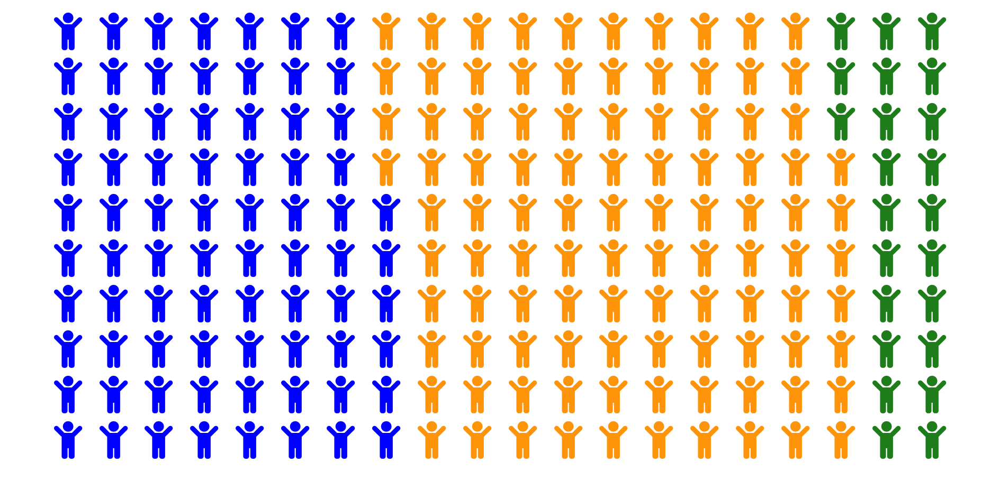

Chapitre 2 Études d’analyse différentielle
Ce chapitre est un chapitre bibliographique sur les méthodes d’analyses différentielles existantes. 
2.1 Tests statistiques
2.1.1 Analyse de la variance à un facteur
Une première approche pour tester s’il y a un effet du groupe sur l’abondance est d’utiliser un modèle d’ANOVA à un facteur.
Avec \(k\) groupes, on renumérote les abondances des \(N\) individus tels que \(y_{i,j}\) soit l’abondance du \(j^{\text{ème}}\) individu au sein \(i^{\text{ème}}\) groupe. Avec \(n_i\) individus dans le groupe \(i\), la moyenne des abondances au sein du groupe est \(y_{i,\bullet} = \frac{1}{n_i}\sum_{j = 1}^{n_1} y_{i,j}\) et la moyenne générale est \(y_{\bullet, \bullet} = \frac{1}{N} \sum_{i=1}^k \sum_{j = 1}^{n_i} y_{i,j}\).
Sous les hypothèses de normalité et d’homoscédasticité des résidus, la statistique de test \(F\), définie par
\[\begin{equation*} F = \frac{\sum_{i = 1}^k n_i \left(y_{i,\bullet} - y_{\bullet, \bullet} \right)^2 / (k - 1)}{\sum_{i=1}^k \sum_{j = 1}^{n_i} \left(y_{i,j} - y_{i,\bullet} \right)^2 / (N - k)}, \end{equation*}\]
suit une loi de Fisher à \(k - 1\) et \(N - k\) degrés de liberté.
\(F\) correspond au ratio entre la variance des moyennes de chaque groupe et la variance totale. On rejette alors \(\mathcal{H}_0 = \left\{\text{tous les groupes ont la même moyenne}\right\}\) si \(F\) est suffisamment grande et on considère que le groupe a une influence sur l’abondance.
2.1.2 Test de Wilcoxon
Le test de Wilcoxon-Mann-Whitney (Mann & Whitney, 1947; Wilcoxon, 1992) permet de tester si, pour deux échantillons, la probabilité qu’une valeur tirée au hasard dans un échantillon soit plus petite qu’une valeur tiré au hasard dans le second est égale à la probabilité qu’elle soit plus grande. L’hypothèse nulle est alors \(\mathcal{H}_0 = \left\{\PP{X < Y} = \PP {Y < X} \right\}\) pour \(X\) et \(Y\) tirés dans chacune des populations. En pratique, on utilise ce test non-paramétrique pour vérifier si les deux populations suivent la même distribution ou non.
Formellement, soit \(X = (x_1, \ldots, x_{n_1})\) et \(Y = (y_1, \ldots, y_{n_2})\) les deux échantillons à comparer pour lesquels il n’y a pas d’égalité dans leurs valeurs. Il est possible de définir sans ambiguïté le rang de chaque individu au sein de l’échantillon concaténé de taille \(n_1 + n_2\), puis \(R_1\) la somme des rangs des individus du premier groupe. Sous \(\mathcal{H}_0\), la statistique de test \[\begin{equation*} U = R_1 - \frac{n_1(n_1 + 1)}{2} \end{equation*}\]
suit asymptotiquement une loi normale de moyenne \(\frac{n_1n_2}{2}\) et de variance \(\frac{n_1 n_2(n_1 + n_2 + 1)}{12}\). On rejette \(\mathcal{H}_0\) lorsque \(\left|U\right| > \Phi^{-1}(1-\alpha)\). Il est possible de généraliser lorsqu’il y a des égalités dans les valeurs au sein d’un échantillon ou entre les échantillons. Dans ce cas là, la variance de la loi asymptotique doit être ajustée en conséquence.
2.1.3 Test de Kruskall-Wallis
Le test de Kruskall-Wallis (Kruskal & Wallis, 1952) est une généralisation à \(k\) groupes du test de Wilcoxon-Mann-Whitney. Il est utilisé pour déterminer si les \(k\) échantillons proviennent d’une même population ou si au moins un des échantillons a une distribution différente des autres.
Comme pour Wilcoxon-Mann-Whitney, on commence par concaténer les \(N = \sum_{i = 1}^{k}n_i\) observations des \(k\) échantillons puis calculer la somme des rangs au sein de chaque groupe : \(R_1, \ldots, R_k\). Si les observations sont indépendantes et qu’il n’y a pas d’égalité dans leurs valeurs, la statistique de test
\[\begin{equation} \tag{2.1} H = \frac{12}{N (N + 1)} \sum_{i=1}^{k} \frac{R_i^2}{n_i} - 3(N + 1) \end{equation}\]
suit une loi du \(\chi^2\) à \(k - 1\) degrés de libertés. \(H\) peut être réécrite comme
\[\begin{equation*} \frac{N - 1}{N} \frac{ \sum_{i=1}^k n_i \left(\frac{R_i}{n_i} - \frac{N + 1}{2}\right)^2}{\frac{N^2-1}{12}}, \end{equation*}\]
qui, à un facteur multiplicatif près, correspond à la statistique de test d’une ANOVA à un facteur sur les rangs et où la variance au dénominateur n’a pas besoin d’être estimée (il s’agit de la variance de la loi uniforme sur \([\![1,N]\!]\)).
Lorsque des égalités sont présentes au sein des échantillons, \(H\) est calculée en divisant l’expression (2.1) par
\[\begin{equation*} 1-\frac{\sum_{i = 1}^k t_i^3 - t_i}{N^3 - N}, \end{equation*}\]
où \(t_i\) est le nombre d’égalités au sein du \(i^{\text{ème}}\) échantillon. Après cette correction, si les \(n_i\) ne sont pas trop petits, cette nouvelle statistique \(H\) corrigée suit toujours une loi qui \(\chi^2\) à \(k - 1\) degrés de liberté.
On rejette l’hypothèse nulle sur l’égalité des rangs moyens \(\mathcal{H}_0 = \left\{ \frac{R_1}{n_1} = \ldots = \frac{R_k}{n_k} \right\}\) lorsque \(H\) est plus grande que la valeur seuil déterminée par \(\alpha\).
2.1.4 Autres méthodes
Les données métagénomiques ayant les spécificités précédemment présentées dans la section 1.2.4 (non-normalité, surabondance de zéros, somme contrainte…), des méthodes spécifiques ont été développées pour les appréhender. Nous pouvons par exemple citer edgeR (Robinson, McCarthy, & Smyth, 2010), DESeq2 (Love, Huber, & Anders, 2014), metagenomeSeq (Paulson, Stine, Bravo, & Pop, 2013) ou mbzinb (Chen et al., 2018). Celles-ci peuvent utiliser des modèles linéaires généralisés ou des modèles avec excès de zéros pour essayer d’appréhender au mieux les données.
Nous n’avons pas testé ces méthodes dans nos analyses. Nous nous intéressons à l’apport de l’information hiérarchique et avons préféré utiliser le même test classique (Wilcoxon ou Kruskall-Wallis) dans toutes nos comparaison. La nouvelle procédure que nous proposons dans le chapitre 4 peut cependant être appliquée sur les sorties de méthodes quelconques, pourvu qu’elles fournissent un vecteur de \(p\)-valeurs.
edgeR et DESeq2
Proposés initialement pour de l’analyse de données de transcriptomique, edgeR (Robinson et al., 2010) et DESeq2 (Love et al., 2014) ajustent un modèle de régression linéaire généralisé avec une structure d’erreur binomiale négative, afin de prendre en compte la surdispersion des données.
Le compte du taxon \(i\) dans l’échantillon \(j\) appartenant au groupe \(g\) est modélisé par
\[\begin{equation*} Y_{i,j} \sim \text{NB}\left(s_j \mu_{i,g},\alpha_{i,g}\right) \end{equation*}\]
où \(s_j\) est un facteur de normalisation qui modélise le nombre total de lectures dans l’échantillon \(j\), \(\mu_{i,g}\) est l’abondance du taxon \(i\) dans le groupe \(g\) et \(\alpha_{i,g}\) sa dispersion. La comparaison entre les groupes \(g\) et \(g'\) se formule alors \(\mathcal{H}_0 : \left\{\mu_{i,g} = \mu_{i,g'}\right\}\) contre \(\mathcal{H}_1 : \left\{\mu_{i,g} \neq \mu_{i,g'}\right\}\).
mbzinb
mbzinb (Chen et al., 2018) modélise également les comptes de lectures. En notant de plus \(p_{i,g}\) la proportion de zéros pour le taxon \(i\) dans les échantillons du groupe \(g\) (et donc \(1 - p_{i,g}\) sa prévalence), on a un nouveau modèle avec excès de zéros :
\[\begin{equation*} Y_{i,j} \sim p_{i,g} \delta_0 + (1-p_{i,g}) \text{NB}\left(s_j\mu_{i,g},\alpha_{i,g}\right), \end{equation*}\]
où \(\delta_0\) est la masse de Dirac en \(0\).
ALDEx2
Contrairement aux méthodes précédentes, ALDEx2 (Fernandes et al., 2014) considère les données métagénomiques comme des données compositionnelles. Ce test commence par normaliser les données pour les plonger dans le simplexe, puis ajuste une distribution de Dirichlet sur celles-ci. Elle génère alors des réalisations conformément à la loi de Dirichlet apprise via une méthode de Monte-Carlo afin d’augmenter artificiellement la taille du jeu de données. Enfin, les jeux de données artificiels sont projetés dans \(\RR^p\) via la transformation \(\text{clr}\) avant d’effectuer des tests d’abondance différentiels classiques pour obtenir des \(p\)-valeurs.
2.2 Problématique des tests multiples
À chaque fois qu’un test est réalisé, il y une probabilité \(\alpha\) que celui-ci rejette à tort une hypothèse nulle. Si \(m\) tests indépendants sont réalisés, la probabilité qu’au moins une hypothèse rejetée le soit à tort est alors de \(1-(1-\alpha)^m\), qui dépasse \(0.9\) pour \(m = 50\) et \(\alpha = 0.05\). En métagénomique, il est courant d’effectuer plusieurs centaines de tests simultanés, et la nécessité de corriger pour la multiplicité des tests est d’autant plus importante.

Figure 2.1: Dessin humoristique illustrant la problématique des tests multiples, par XKCD.
2.2.1 Évaluation des performances
Lorsqu’une série de tests est réalisée et que la vérité est connue, il est possible de comparer le résultat avec l’attendu et de compter les effectifs dans les quatre configurations possibles.
Lorsqu’un test rejette l’hypothèse nulle à raison, on parlera de vrai positif et s’il la rejette à tort, il s’agira d’un faux positif. Si un test ne parvient pas à rejeter l’hypothèse nulle alors que celle-ci est vraie, il s’agit d’un vrai négatif alors que s’il aurait dû la rejeter, il s’agit d’un faux négatif. Sur l’ensemble des tests, le nombre de vrais positifs, vrais négatifs, faux positifs et faux négatifs sont notés respectivement TP, TN, FP et FN. Ces quantités sont agrégées dans la matrice de confusion, présentée dans la figure 2.2.
Figure 2.2: Matrice de confusion. TP est le nombre de vrais positifs, TN le nombre de vrais négatifs, FP le nombre de faux positifs et FN le nombre de faux négatifs.
À partir de ces mesures primaires, on peut définir le taux de vrais positifs (true positive rate), appelé également puissance, sensibilité ou rappel :
\[\begin{equation*} \text{TPR} = \frac{\text{TP}}{\text{TP} + \text{FN}}, \end{equation*}\]
qui représente la proportion d’espèces vraiment différentiellement abondantes que la méthode arrive à détecter. C’est une quantité que l’on souhaite maximiser. Cependant, un test qui détecterait toutes les espèces comme différentiellement abondantes aurait un TPR au maximum, à \(1\). Il faut donc aussi pouvoir contrôler que l’on ne rejette pas trop à tort, en contrôlant soit directement le nombre de faux positifs FP, soit la proportion de faux positifs parmi les positifs (false discovery proportion) :
\[\begin{equation*} \text{FDP} = \frac{\text{FP}}{\text{TP} + \text{FP}}. \end{equation*}\]
Le FDP est lié à la précision \(\text{PPV}\) (positive predictive value) via \(\text{PPV} = 1 - \text{FDP}\). Celle-ci mesure la crédence que l’on peut accorder au test sachant qu’il a rejeté l’hypothèse nulle.
Une fois que l’on maximise la puissance d’un test tout en contrôlant le nombre ou la proportion de fausses découvertes, il est intéressant d’avoir des métriques qui combinent ces métriques secondaires, comme l’exactitude (accuracy), qui est la proportion de fois où le test a correctement assigné les bactéries :
\[\begin{equation*} \text{ACC} =\frac{\text{TP} + \text{TN}}{\text{TP} + \text{FP} + \text{FN} + \text{TN}}, \end{equation*}\]
ou du score \(\text{F}_1\) qui est la moyenne harmonique entre la précision et le rappel :
\[\begin{equation*} \text{F}_1 = \frac{2}{\frac{1}{\text{TPR}} + \frac{1}{\text{PPV}}} = \frac{2 \text{TP}}{2\text{TP} + \text{FP} + \text{FN}}. \end{equation*}\]
Ces deux quantités sont à valeurs dans \(\mathopen[0,1\mathclose]\) et plus elles sont proches de \(1\), plus le modèle est performant.
Les mesures présentées auparavant sont valables quelque soit le seuil à partir duquel on rejette l’hypothèse nulle, couramment égal à \(0.05\). Il peut alors être intéressant de regarder ces quantités comme une fonction du seuil de rejet \(t\) : \(\text{TPR}(t)\), \(\text{FDP}(t)\), \(\text{ACC}(t)\)…
On défini alors la courbe ROC (receiver operating characteristic) comme étant la sensibilité en fonction de la spécificité pour les différents seuil, soit l’ensemble des points \(\left(\text{FDP}(t), \text{TPR}(t)\right)_{t\in\mathopen[0,1\mathclose]}\).
Lorsque \(t=0\), on ne rejette jamais, il n’y a ni faux positif ni vrai positif et on est en \((0,0)\). Lorsque \(t=1\), on rejette tout le temps, \(\text{FN} = \text{TN} = 0\) et on est en \((1,1)\). \(\text{FDP}\) et \(\text{TPR}\) sont des fonctions croissantes en \(t\). En \((0,1)\), il n’y a ni faux négatif ni faux positif et le test est toujours correct. La courbe ROC relie donc \((0,0)\) à \((1,1)\) et plus elle s’approche de \((0,1)\), mieux c’est. L’aire sous la courbe ROC, dite AUC pour area under the curve, permet de quantifier la qualité d’un classificateur indépendamment du seuil choisi. Plus l’AUC est proche de \(1\), plus le classificateur est performant.
2.2.2 Correction de Bonferroni
La correction de Bonferroni a pour objectif de contrôler le family-wise error rate, la probabilité de faire au moins une erreur dans les découvertes en changeant le seuil auquel on rejette l’hypothèse nulle. Si au lieu de rejeter en dessous du seuil \(\alpha\), on rejette en dessous de \(\frac{\alpha}{m}\), on contrôle le FWER au niveau \(\alpha\) :
\[\begin{align*} \text{FWER} & = \PP{\text{FP} \geq 1} \\ & = \PP{\bigcup_{i\in \mathbb{H}_0} \left\{\pv_i \leq \frac{\alpha}{m}\right\} } \\ & \leq \sum_{i\in \mathbb{H}_0} \PP{\left\{\pv_i \leq \frac{\alpha}{m} \right\}} \\ & = m_0 \frac{\alpha}{m} \\ & \leq \alpha. \end{align*}\]
Pour plus de praticité, on travaille avec les \(q\)-valeurs associées à la correction de Bonferroni définies par
\[\begin{equation*} \qv^{\text{bonf}} = m * \pv, \end{equation*}\]
qui sont, elles, comparées au seuil \(\alpha\).
Ainsi, avec une probabilité de \(1-\alpha\), il n’y a aucun faux positif pour l’ensemble des tests réalisés.
Cependant, les procédures qui contrôlent le FWER comme les corrections de Bonferroni ou de Holm, une alternative plus puissante (Holm, 1979), sont très conservatrices et peu utilisées en métagénomique.
2.2.3 Correction de Benjamini-Hochberg
Au lieu de n’autoriser aucun faux positif à un risque \(\alpha\), Benjamini & Hochberg (1995) proposent de contrôler la proportion de fausses découvertes parmi les découvertes. Il s’agit alors de garder la quantité \(\text{FDP} = \frac{\text{FP}}{\text{R} \vee 1}\) en dessous d’un seuil \(\alpha\), où \(\text{R} = \text{TP} + \text{FP}\) est le nombre d’hypothèses rejetées.
Sous réserve d’une indépendance entre les tests, la procédure de Benjamini-Hochberg (BH) contrôle l’espérance du \(\text{FDP}\), appelée FDR (pour false discovery rate), au seuil \(\alpha\). Celle-ci se fait en trois étapes :
ordonner les \(p\)-valeurs \(\pv_{(1)}, \ldots, \pv_{(m)}\) et poser \(\pv_{(0)} = 0\) ;
trouver le rang \(\hat{\ell} = \max\left\{\ell \in [\![0,m]\!] \left| \pv_{(\ell)} \leq \frac{\alpha\ell}{m} \right. \right\}\) ;
rejeter les \(\hat{\ell}\) hypothèses correspondant aux plus petites \(p\)-valeurs.
En effet, notons \(V_i = \indic_{\left\{H_i \text{ est rejetée}\right\}}\) pour \(i \in \mathbb{H}_0\). On a alors \(\text{FDP} = \frac{\text{FP}}{\text{R} \vee 1} = \sum_{i\in \mathbb{H}_0} \frac{V_i}{\text{R} \vee 1}\).
Fixons \(i\in \mathbb{H}_0 \neq \emptyset\). S’il y a \(k\) hypothèses rejetées, alors \(H_i\) est rejetée si et seulement si \(\pv_i \leq \frac{\alpha k}{m}\) et alors \(V_i = \indic_{\left\{\pv_i \leq \frac{\alpha k}{m}\right\}}\). Définissons \(\text{R}(\pv_i \rightarrow 0)\) le nombre d’hypothèses rejetées lorsqu’on fixe \(\pv_i\) à \(0\). S’il y a \(k\) hypothèses rejetées et que \(\pv_i \leq \frac{\alpha k}{m}\), \(H_i\) est rejetée et fixer \(\pv_i\) à \(0\) ne change pas le nombre d’hypothèses rejetées : \(\text{R} = \text{R}(\pv_i \rightarrow 0)\). À l’inverse, si \(\pv_i > \frac{\alpha k}{m}\), \(H_i\) n’est pas rejetée et \(V_i = 0\). La concaténation des deux résultats précédents donne \(V_i\indic_{\left\{\text{R}=k\right\}} = V_i\indic_{\left\{\text{R}(\pv_i \rightarrow 0) = k\right\}}\).
En notant \(\mathcal{F}_i = \left\{\pv_1, \ldots, \pv_{i-1}, \pv_{i+1}, \ldots, \pv_m \right\}\) la tribu engendrée par les \(p\)-valeurs sauf \(\pv_i\),
\[\begin{equation*} \begin{aligned} \EE{\left.\frac{V_i}{\text{R}\vee 1} \right| \mathcal{F}_i} & = \EE{\left.\sum_{k = 1}^m\frac{V_i\indic_{\left\{\text{R}=k\right\}}}{k} + \frac{0}{0\vee1} \right| \mathcal{F}_i} \\ & = \sum_{k = 1}^m \EE{\left.\frac{V_i\indic_{\left\{\text{R}(\pv_i \rightarrow 0)=k\right\}}}{k}\right| \mathcal{F}_i} \\ & = \sum_{k = 1}^m \indic_{\left\{\text{R}(\pv_i \rightarrow 0)=k\right\}} \EE{\left.\frac{\indic_{\left\{\pv_i \leq \frac{\alpha k}{m}\right\}}}{k}\right| \mathcal{F}_i} \\ & = \sum_{k = 1}^m \indic_{\left\{\text{R}(\pv_i \rightarrow 0)=k\right\}} \frac{\alpha}{m} \\ & = \frac{\alpha}{m}. \end{aligned} \end{equation*}\]
La troisième égalité provient du fait que \(\text{R}(\pv_i \rightarrow 0)\) est connue conditionnellement à \(\mathcal{F}_i\), la quatrième découle du fait que \(\pv_i \sim \unif{\mathopen[0, 1\mathclose]}\) et la dernière résulte du fait qu’en fixant une \(p\)-valeur à \(0\), on va rejeter au moins une fois et \(\text{R}(\pv_i \rightarrow 0)\) est compris entre \(1\) et \(m\).
Finalement,
\[\begin{equation*} \text{FDR} = \EE{\text{FDP}} = \EE{\sum_{i\in \mathbb{H}_0} \frac{V_i}{\text{R} \vee 1}} = \sum_{i\in \mathbb{H}_0}\frac{\alpha}{m} \leq \alpha. \end{equation*}\]
En terme de \(q\)-valeurs,
\[\begin{equation*} \qv^{\text{bh}}_{(i)} = \min\left\{\min_{j\ge i}\left\{\frac{m\pv_{(j)}}{j}\right\},1\right\}, \end{equation*}\]
où \(\pv_{(1)}, \ldots, \pv_{(m)}\) sont les \(p\)-valeurs réordonnées et \(\qv^{\text{bh}}_{(i)}\) est la \(q\)-valeur associée à \(\pv_{(i)}\).
2.2.4 Correction de Benjamini-Yekutieli
Si les tests ne sont pas indépendants, il est possible d’appliquer la procédure de Benjamini-Yekutieli (BY) (Benjamini & Yekutieli, 2001) qui ne requiert aucune hypothèse d’indépendance entre les tests. Il s’agit d’une modification dans la procédure de Benjamini-Hochberg, où l’on ne compare plus à \(\frac{\alpha\ell}{m}\) mais à \(\frac{\alpha\ell}{m\sum_{i = 1}^m \frac{1}{\ell}}\).
Les \(q\)-valeurs sont alors
\[\begin{equation*} \qv^{\text{by}}_{(i)} = \min\left\{\min_{j\ge i}\left\{\sum_{i = 1}^m \frac{1}{i} \frac{ m\pv_{(j)}}{j}\right\},1\right\}. \end{equation*}\]
Cette procédure très générique présente l’inconvénient d’être extrêmement conservatrice et de faire peu de découvertes.
2.3 Procédures hiérarchiques pour tests multiples
Jusqu’alors, les corrections proposées font l’hypothèse (a priori fausse) que les tests sont indépendants ou vérifient une hypothèse technique de dépendance positive, comme BH, ou fonctionnent quelque soit la relation de dépendance entre les tests, au prix d’un fort conservatisme, comme BY.
Il serait plus intéressant d’utiliser explicitement la relation de dépendance entre les tests afin d’augmenter la puissance statistique. C’est ce que proposent les méthodes présentées dans cette section.
Cette section ne nécessite qu’une définition intuitive de ce qu’est un arbre : un graphe acyclique connexe orienté dont les nœuds terminaux (feuilles) sont étiquetés et ayant ou non des longueurs de branches. Une définition plus rigoureuse en sera donnée dans le chapitre 3.
2.3.1 TreeFDR
TreeFDR (Xiao, Cao, & Chen, 2017) est une procédure de lissage des \(z\)-scores suivie d’une procédure de correction par permutation implémentée dans le package {StructFDR}.
Dans ce modèle hiérarchique, les \(z\)-scores \(\zs = \Phi^{-1}\left(\pv\right)\) sont vus comme la réalisation un vecteur gaussien multivarié de moyenne \(\mu\) :
\[\begin{equation*} \left. \zs \mid \mu \right. \sim \mathcal{N}_m\left(\mu,\sigma^2 \mathbf{I}_m\right). \end{equation*}\]
À partir de l’arbre, on calcule la matrice des distances patristiques entre feuilles \(D = (d_{i,j})_{i,j}\) que l’on converti en une matrice de corrélation \(C_{\rho} = \left(\exp\left(-2\rho D_{i,j}\right)\right)_{i,j}\). Cette matrice de corrélation est ensuite utilisée pour décrire les corrélations entre les composantes de \(\mu\) :
\[\begin{equation*} \mu \sim \mathcal{N}_m\left(\gamma \mathbf{1}_m,\tau^2C_{\rho}\right). \end{equation*}\]
L’estimateur du maximum a posteriori de \(\mu\) est alors
\[\begin{equation*} \mu^* = \left(\mathbf{I}_m + k^2 C_{\rho}^{-1}\right)\left(k^2 C_{\rho}^{-1} \gamma \mathbf{1}_m + \zs \right), \end{equation*}\]
avec \(k = \frac{\sigma}{\tau}\).
Les hyperparamètres \(\rho\) et \(k\) contrôlent le niveau de lissage du modèle : les \(z\)-scores issus d’un même clade vont être regroupés vers une valeur commune. De hautes valeurs de \(k\) ou de faibles valeurs de \(\rho\) entraînent un fort lissage.
2.3.2 FDR hiérarchique
Le FDR hiérarchique (hFDR) est une procédure proposée par Yekutieli (2008) et implémentée dans le package R {structSSI} (Sankaran & Holmes, 2014).
Contrairement à TreeFDR, le FDR hiérarchique a besoin d’avoir une \(p\)-valeur à chaque nœud interne. Dans le cas de données métagénomiques, celles-ci peuvent facilement être obtenues en effectuant un test d’abondance différentielle sur la somme des bactéries qui descendent du nœud considéré.
C’est un algorithme descendant qui teste les hypothèses par familles –c’est à dire tous les enfants d’un même nœud– au niveau \(\alpha\) en corrigeant avec BH à chaque fois. Plus précisément, on commence par tester la famille de la racine (avec une correction de BH). Puis, pour chaque nœud rejeté au sein de cette famille, on va tester ses enfants (en corrigeant toujours avec BH). À l’inverse, si un nœud n’est pas rejeté, aucun de ses enfants directs et de ses descendants n’est testé. L’algorithme se termine une fois arrivé aux feuilles ou lorsqu’il ne reste que des nœuds qui n’ont pas pu être rejetés. La figure 2.3 illustre cette procédure sur un arbre à \(6\) feuilles.
![Exemple d’une procédure de FDR hiérarchique. Les hypothèses à tester sont notées \(H_1\) à \(H_{12}\). L’algorithme commence par tester et rejeter (après correction) \(H_1\) et \(H_2\). Puis il teste la famille \((H_3, H_4)\), car ce sont des enfants de \(H_1\), et rejette \(H_4\) mais pas \(H_3\). La famille \((H_7, H_8, H_9)\) n’est pas testée car \(H_3\) n’a pas été rejeté. \(H_{10}\) est testé et rejeté. L’algorithme procède de même sur les descendants de \(H_2\). En définitive, il y a trois découvertes aux feuilles (\(H_{10}\), \(H_{11}\) et \(H_{12}\)) pour \(5\) familles testées. Le FDR a posteriori pour les feuilles est alors de \(1.44 \times \alpha \times 2\).](img/hfdr.png)
Figure 2.3: Exemple d’une procédure de FDR hiérarchique. Les hypothèses à tester sont notées \(H_1\) à \(H_{12}\). L’algorithme commence par tester et rejeter (après correction) \(H_1\) et \(H_2\). Puis il teste la famille \((H_3, H_4)\), car ce sont des enfants de \(H_1\), et rejette \(H_4\) mais pas \(H_3\). La famille \((H_7, H_8, H_9)\) n’est pas testée car \(H_3\) n’a pas été rejeté. \(H_{10}\) est testé et rejeté. L’algorithme procède de même sur les descendants de \(H_2\). En définitive, il y a trois découvertes aux feuilles (\(H_{10}\), \(H_{11}\) et \(H_{12}\)) pour \(5\) familles testées. Le FDR a posteriori pour les feuilles est alors de \(1.44 \times \alpha \times 2\).
Alors que \(\alpha\) est le niveau de contrôle a priori intra-familles, si l’on ne considère que les découvertes au niveau des feuilles, hFDR garanti un contrôle a posteriori au niveau
\[\begin{equation*} \alpha' = 1.44 \times \alpha \times \frac{\# \text{découvertes} + \#\text{familles testées}}{\# \text{découvertes} + 1}. \end{equation*}\]
Cette méthode souffre de plusieurs problèmes majeurs. Tout d’abord, le contrôle du FDR est fait seulement a posteriori, et plusieurs essais sont nécessaires pour contrôler le FDR au niveau souhaité, sans avoir la certitude que cela soit possible. De plus, pour que la procédure descende jusqu’aux feuilles, il faut que le signal d’abondance différentielle soit détectable dès la famille de la racine, sinon la procédure s’arrête dès le début, et cela arrive souvent en pratique (Huang et al., 2020).
Enfin, dans son implémentation par Sankaran & Holmes (2014), les \(p\)-valeurs d’entrées ne sont pas données en argument par l’utilisateur mais calculées au sein la procédure via une ANOVA à un facteur. Ce type de test n’est malheureusement pas adapté aux données métagénomiques, ce qui fait perdre de la puissance à la procédure (Bichat, Plassais, Ambroise, & Mariadassou, 2020). Pour ces raisons, la procédure hFDR ne sera pas comparée aux autres méthodes dans la section 4.
2.3.3 treeclimbR
Huang et al. (2020) ont récemment proposé treeclimbR, une procédure ascendante qui permet de sélectionner directement des clades différentiellement abondants.
Tout d’abord, pour chaque nœud interne, on agrège les abondances en les sommant sur ses descendants. Puis, pour chaque nœud \(i\) (interne ou feuille), on effectue un test qui renvoie une \(p\)-valeur \(\pv_i\) ainsi que le signe \(\sign_i\in \{-1,1\}\) associé à la direction du changement d’abondance.
On calcule ensuite un score à chaque nœud défini par
\[\begin{equation*} U_i(t) = \left|\frac{\sum_{k \in \desc(i)} \sign_k \indic_{\{\pv_i < t\}}}{\#\desc(i)}\right| \end{equation*}\]
où \(t \in \mathopen[0,1\mathclose]\) est un hyperparamètre que l’on va estimer dans la suite et \(\desc(i)\) est l’ensemble des descendants de \(i\). Lorsque \(U_i(t)\) est proche de \(1\), cela signifie que les descendants de \(i\) sont différentiellement abondants et dans le même sens. À l’inverse, quand \(U_i(t)\) s’approche de \(0\), soit les espèces ne sont pas différentiellement abondantes, soit elles le sont dans des directions opposées.
Pour chaque \(t\) candidat sur une grille, on parcours l’arbre depuis la racine et on arrête la descente d’une branche lorsque l’on rencontre un nœud \(i\) tel que \(U_i(t) = 1\) : il s’agit d’un nœud terminal pour la procédure, qui représente tous ses descendants.
On effectue ensuite une correction pour test multiple (Benjamini-Hochberg) sur les nœuds terminaux et les feuilles qui ne font pas partie de la descendance d’un nœud terminal.
Il reste à sélectionner le meilleur \(t\) candidat. On utilise trois critères éliminatoires. Le premier est un choix a posteriori d’une borne maximale \(t_{\max}\) pour \(t\) (dépendante des résultats) et on exclut les candidats tels que \(t\in\mathopen[0, t_{\max}\mathclose]\), ceci permettant de contrôler le FDR au niveau des feuilles parmi les candidats restants. Puis on ne conserve que les candidats ayant le plus grand nombre de feuille rejetées, ce qui maximise la puissance. Et enfin, parmi les candidats restants, on ne garde que ceux qui minimisent le nombre de nœuds rejetés, pour retenir le niveau de résolution le plus adapté.